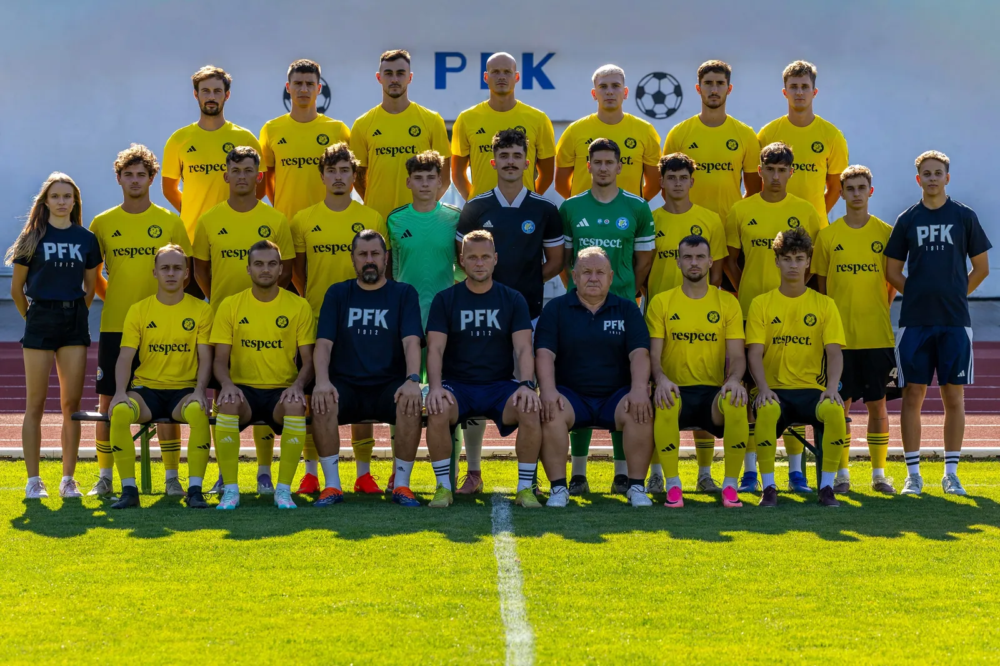

Posledný zápasA-mužstvo
 FK Spartak Dubnica nad Váhomdomáci
FK Spartak Dubnica nad VáhomdomáciVýsledok 4:0
 PFK Piešťanyhostia
PFK PiešťanyhostiaPrehrapolčas 3:0
PFK Piešťanyod roku 1912
Návrh webu · nie je to oficiálna stránka klubu

Futbal v našom kúpeľnom meste
Muži hrajú IV. ligu a po jeseni sú na 5. mieste. V klube je 13 tímov od prípravky U9 po áčko a ich domovom je štadión na Kuzmányho ulici.
Posledný zápasA-mužstvo
FK Spartak Dubnica nad VáhomdomáciVýsledok 4:0
PFK PiešťanyhostiaPrehrapolčas 3:0
Posledný zápasU19 A Starší dorast
 AFC Nové Mesto nad Váhomdomáci
AFC Nové Mesto nad VáhomdomáciVýsledok 2:3
PFK Piešťany U19 AhostiaVýhrapolčas 2:3
Posledný zápasU17 A Mladší dorast
AFC Nové Mesto nad VáhomdomáciVýsledok 0:4
PFK Piešťany U17 AhostiaVýhrapolčas 0:4
Posledný zápasU17 B Mladší dorast
 MTK LeopoldovdomáciPFK Piešťany U17 Bhostia
MTK LeopoldovdomáciPFK Piešťany U17 BhostiaVýsledky prípraviek sa nezapisujú
Posledný zápasU15 A Starší žiaci
PFK Piešťany U15 AdomáciVýsledok 2:1
AFC Nové Mesto nad VáhomhostiaVýhrapolčas 0:1
Posledný zápasU15 B Starší žiaci
 ŠKF Sereď Bdomáci
ŠKF Sereď BdomáciVýsledok 6:0
PFK Piešťany U15 BhostiaPrehrapolčas 2:0
Posledný zápasU13 A Mladší žiaci
PFK Piešťany U13 AdomáciVýsledok 4:0
AFC Nové Mesto nad VáhomhostiaVýhrapolčas 3:0
Posledný zápasU13 B Mladší žiaci
ŠKF Sereď BdomáciVýsledok 2:3
PFK Piešťany U13 BhostiaVýhrapolčas 1:2
Posledný zápasU11 A Prípravka
PFK Piešťany U11 Adomáci MŠK Púchovhostia
MŠK PúchovhostiaVýsledky prípraviek sa nezapisujú
Posledný zápasU11 B Prípravka
 OŠK Horné OtrokovcedomáciPFK Piešťany U11 Bhostia
OŠK Horné OtrokovcedomáciPFK Piešťany U11 BhostiaVýsledky prípraviek sa nezapisujú
Posledný zápasU10 Prípravka
PFK Piešťany U10domáciMŠK PúchovhostiaVýsledky prípraviek sa nezapisujú
Posledný zápasU9 A Prípravka
PFK Piešťany U9 AdomáciMŠK PúchovhostiaVýsledky prípraviek sa nezapisujú
Posledný zápasU9 B Prípravka
 FC BankadomáciPFK Piešťany U9 Bhostia
FC BankadomáciPFK Piešťany U9 BhostiaVýsledky prípraviek sa nezapisujú
Zimná prestávka Jar sa začína v sobotu 6. marca 2027, áčko v ten deň hrá vonku na ihrisku Mestský futbalový klub Gbely.
2015 → 2026/27
Po 102 rokoch nepretržitej činnosti mužské družstvo v roku 2015 zaniklo, klub ďalej viedol len mládež. V auguste 2016 prevzalo piešťanský futbal nové vedenie a prihlásilo mužov do najnižšej, ôsmej ligy. Odvtedy išli tri sezóny po sebe z prvého miesta o ligu vyššie.
Jozef Glos bol najlepším strelcom mužov v prvých troch sezónach po návrate: 31, 51 a 18 gólov.
Celá história od roku 1912| # | Tím | Z | V | R | P | Skóre | B |
|---|---|---|---|---|---|---|---|
| 3 | 15 | 9 | 3 | 3 | 21:11 | 30 | |
| 4 | 15 | 8 | 2 | 5 | 32:28 | 26 | |
| 5 | 15 | 7 | 4 | 4 | 29:19 | 25 | |
| 6 | 15 | 6 | 5 | 4 | 22:16 | 23 | |
| 7 | 15 | 6 | 4 | 5 | 26:24 | 22 |
Štadión na Kuzmányho ulici neslúži len zápasom áčka. Klub tu prevádzkuje celý areál:
Zdroj: starý web klubu, Wikipédia